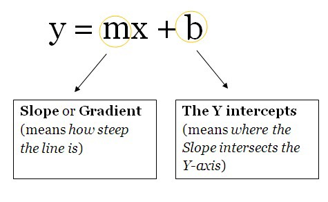

It all started when Warren McCulloch and Walter Pitts created the first model of an NN in 1943. Their model was purely based on mathematics and algorithms and couldn’t be tested due to the lack of computational resources. Later on, in 1958, Frank Rosenblatt created the first ever model that could do pattern recognition. This would change it all. The Perceptron. However, he only gave the notation and the model. The actual model still could not be tested. There were relatively minor researches done before this. The first NNs that could be tested and had many layers were published by Alexey Ivakhnenko and Lapa in 1965. After these, the research on NNs stagnated due to high feasibility of Machine Learning models. This was done by Marvin Minsky and Seymour Papert in 1969. This stagnation however, was relatively short-termed as 6 years later in 1975 Paul Werbos came up with Back-propagation, which solved the XOR problem and in general made NN learning more efficient. Max-pooling was later introduced in 1992 which helped with 3D object recognition as it helped with least shift invariance and tolerance to deformation. Between 2009 and 2012, Recurrent NNs and Deep Feed Forward NNs created by Jürgen Schmidhuber’s research group went on to win 8 international competitions in pattern recognition and machine learning. In 2011, Deep NNs started incorporating convolutional layers with max-pooling layers whose output was then passed to several fully connected layers which were followed by an output layer. These are called Convolutional Neural Networks.they aggregate and recombine features from the previous layer.
A good way to think of an NN is as a composite function. You give it some input and it gives you some output. There are 3 parts that make up the architecture of a basic NN.
These are: All of the things mentioned above are what you need to construct the bare bones architecture of an NN. You can think of these as the building blocks/bricks of a building. Depending on how you want the building to function, you will arrange the bricks and vice versa. The cement can be thought of as the weights. No matter how strong your weights are, if you don’t have a good amount of bricks for the problem at hand, the building will crumble to the ground. However, you can just get the building to function with minimal accuracy(using the least amount of bricks) and then, progressively build upon that architecture to solve a problem.
Being the least important out of the three parts of an NNs architectures, these are functions which contain weights and biases in them and wait for the data to come them. After the data arrives, they, perform some computations and then use an activation function to restrict the data to a range(mostly).
Think of these units as a box containing the weights and the biases. The box is open from 2 ends. One end receives data, the other end outputs the modified data. The data then starts to come into the box, the box then multiplies the weights with the data and then adds a bias to the multiplied data. This is a single unit which can also be thought of as a function. This function is similar to this, which is the function template for a straight line

Being the least important out of the three parts of an NNs architectures, these are functions which contain weights and biases in them and wait for the data to come them. After the data arrives, they, perform some computations and then use an activation function to restrict the data to a range(mostly).
Think of these units as a box containing the weights and the biases. The box is open from 2 ends. One end receives data, the other end outputs the modified data. The data then starts to come into the box, the box then multiplies the weights with the data and then adds a bias to the multiplied data. This is a single unit which can also be thought of as a function. This function is similar to this, which is the function template for a straight line:
Being the most important part of an NN, these(and the biases) are the numbers the NN has to learn in order to generalize to a problem. That is all you need to know at this point.
These numbers represent what the NN “thinks” it should add after multiplying the weights with the data. Of course, these are always wrong but the NN then learns the optimal biases as well.